## <span class='subtitle'>Kahshin Leow & Thies Lindenthal<br><br></span> ## How Predictable<br>are CRE Returns? <br> ## <span class='subtitle'>Cambridge Research Club, March 2024</span> <br><br>
## Empirical Research Landscape <div class='figure'> 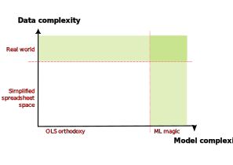 </div>
## Empirical asset pricing<span class='subtitle'><br>Can Machine Learning algorithms find (a bit of) return predictability?</span> * Wide repertoire of machine learning methods benchmarked against more traditional techniques - US stock returns: <a href='https://doi.org/10.1093/rfs/hhaa009'>Gu, Kelly, Xiu (2020)</a> - bond returns: <a href="https://doi.org/10.1093/rfs/hhaa062">Bianchi, Buchner, Tamoni (2021)</a> - Chinese stock returns: <a href='https://doi.org/10.1016/j.jfineco.2021.08.017'>Leippold, Wang, Zhou (2021), JFE</a>
## US Stock Markets<span class='subtitle'><br>Probably one of the toughest markets to find predictability?</span> <div class='figure'> <p class='title'><a href='https://doi.org/10.1093/rfs/hhaa009'>Gu, Kelly, Xiu (2020)</a>: Monthly out-of-sample stock-level prediction performance (percentage $R^{2}_{oos}$)</p> 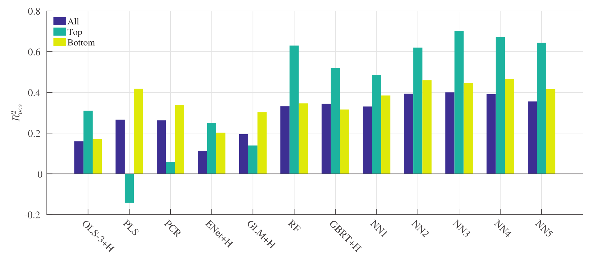 </div>
## The Contenders<span class='subtitle'><br>(jargon cheat sheet)</span> * Frequently spotted approaches - <mark>OLS</mark> ordinary least squares and similar linear models - <mark>PCR</mark> principle component regression - <mark>LASSO</mark> least absolute shrinkage and selection operator - <mark>ENet</mark> elastic net - <mark>RF</mark> random forest - <mark>GBRT</mark> gradient boosted regression trees - <mark>ERT</mark> extremely randomized trees - <mark>NN</mark> neural networks, typically with 1–5 layers * We will later also use OLS with fewer predictors - <mark>OLS-2</mark> only size and book-to-market - <mark>OLS-3</mark> size, book-to-market and momentum
## performance metric * Compare out-of-sample predictive power <br> `$$R_{oos,S}^{2}=1-\frac{\Sigma_{(i,t)\in\mathcal{T}}(r_{i,t+1}-\hat{r}_{i,t+1}^{(S)})^{2}}{ \Sigma_{(i,t)\in\mathcal{T}} r_{i,t+1}^2}$$`
## Chinese Stock Returns<span class='subtitle'><br>Predictability found to be order of magnitude higher</span> <div class='figure'> <p class='title'><a href='https://doi.org/10.1016/j.jfineco.2021.08.017'>Leippold, Wang, Zhou (2021), JFE</a>: Monthly out-of-sample stock-level prediction performance (percentage $R^{2}_{oos}$)</p> 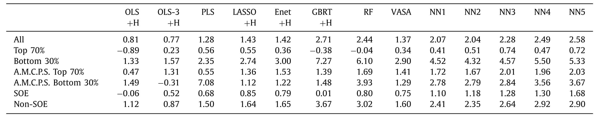 </div>
## Bonds<span class='subtitle'><br>Predictability high for bonds, too</span> <div class='figure'> <p class='title'><a href="https://doi.org/10.1093/rfs/hhaa062">Bianchi, Buchner, Tamoni (2021)</a>: Out-of-sample stock-level prediction performance (percentage $R^{2}_{oos}$)</p> 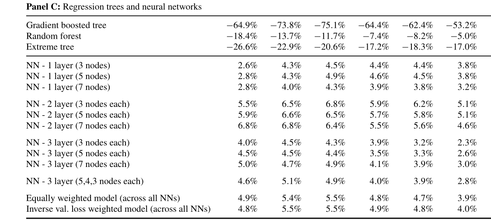 </div>
## REIT Return predictability <span class='subtitle'><br></span> <div class='figure'> 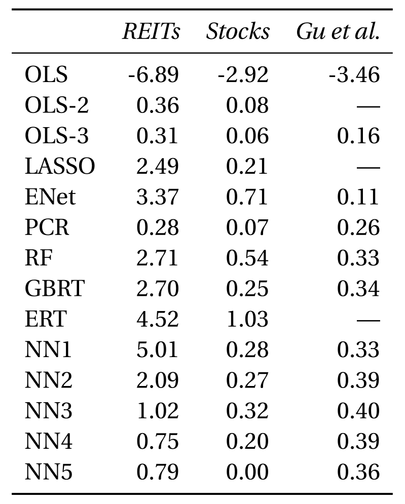 </div>
## Data<span class='subtitle'><br> US REITs, Jan 1990–Dec 2021</span> * CRSP monthly returns for all REITs on NYSE, AMEX & NASDAQ: 486 unique REITs <br>`$$ z_{i,t}= \begin{pmatrix} c_{i,t}\\ x_{t} \otimes c_{i,t}\\ d_{i,t} \end{pmatrix} $$` * Predictors/covariates/features - 94 variables documented in Green et al. (2017) of which 61 are updated annually, 13 are updated quarterly, and 20 are updated monthly. - 17 dummies based on first two digits of SIC code * Interactions with eight macroeconomic predictors following the variable definitions from Welch and Goyal (2008) - dividend-to-price ratio (dp), earnings-to-price ratio (ep), book-to-market ratio (bm), net equity expansion (ntis), Treasury-bill rate (tbl), term spread (tms), default spread (dfy), stock variance (svar) <br><br><br>
## Predictability, by year <span class="subtitle"><br>Machine "Learning": Lessons from GFC incorporated?</span> <div class='figure'> 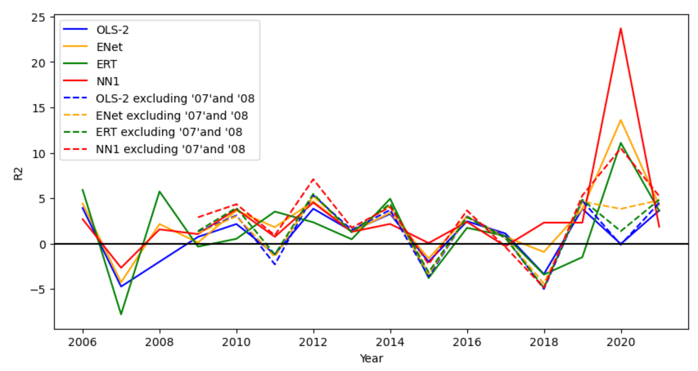 </div>
## Predictability, by year<span class='subtitle'><br>Is performance driven by a few (freak) years? 2007 bad across the board, 2008 mixed</span> <div class='figure'> 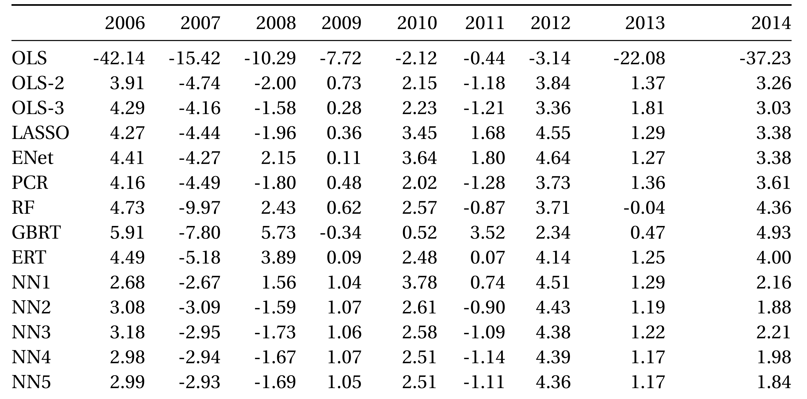 </div>
## Predictability, 2015–2021 <span class='subtitle'><br>Relatively consistent patterns</span> <div class='figure'> 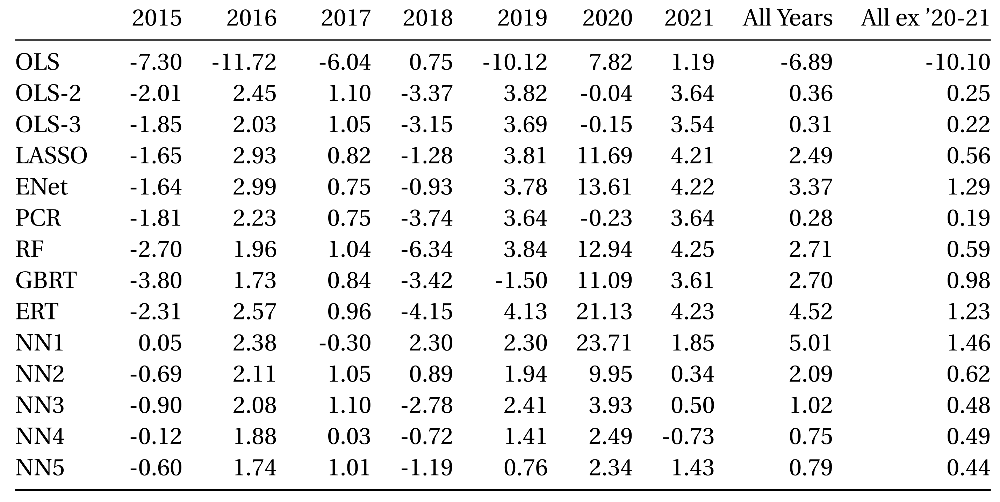 </div>
## Predictability by property type<span class='subtitle'><br>Returns of diversified REIT the most difficult to predict</span> <div class='figure'> 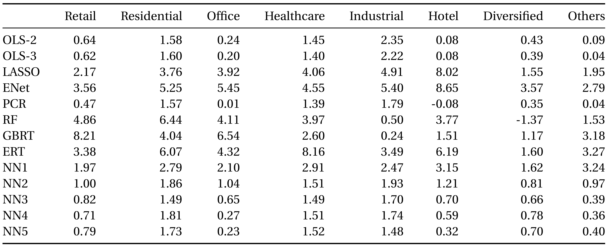 </div>
## Size effects <span class='subtitle'><br>Returns of large REITs are more predictable predict (like large stocks in Gu et al.)</span> <div class='figure'> 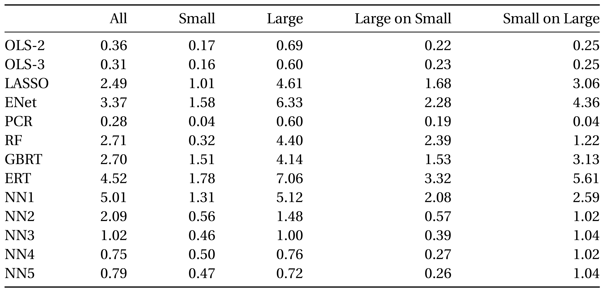 </div>
## Portfolio performance<span class='subtitle'><br>Long positions in top 30% REITs</span> <div class='figure'> 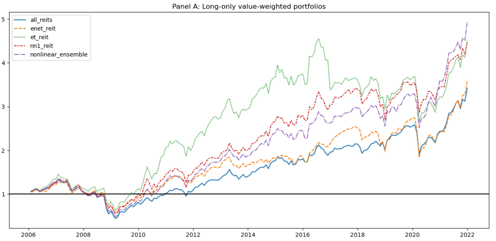 </div>
## Mean-variance optimisation<span class='subtitle'><br>Allen et al (2019) show that mean-variance portfolios benefits from predictability</span> * Markowitz (1953) states that <mark>“we must have procedures for finding reasonable `$\mu_i$` and `$σ_{i,j}$`. These procedures [...] should combine statistical techniques and the judgment of practical men”</mark>. <div class='figure'> 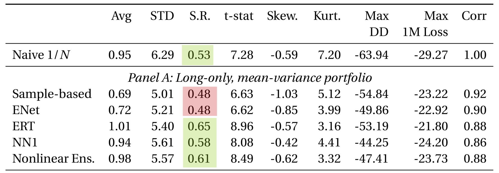 </div>
## Mean-variance optimisation<span class='subtitle'><br>... with predictability and short selling</span> <div class='figure'> 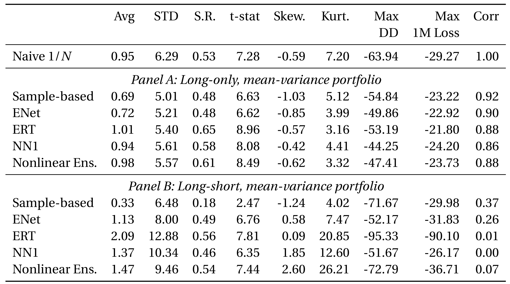 </div>
## Prediction horizons<span class='subtitle'><br>How far can we push it? (Not my favourite slide)</span> <div class='figure'> 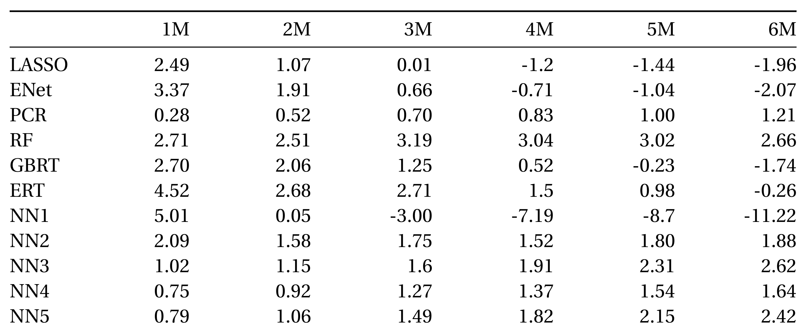 </div>
## Which features matter most?<span class='subtitle'><br>Reliable in time?</span> <div class='figure'> 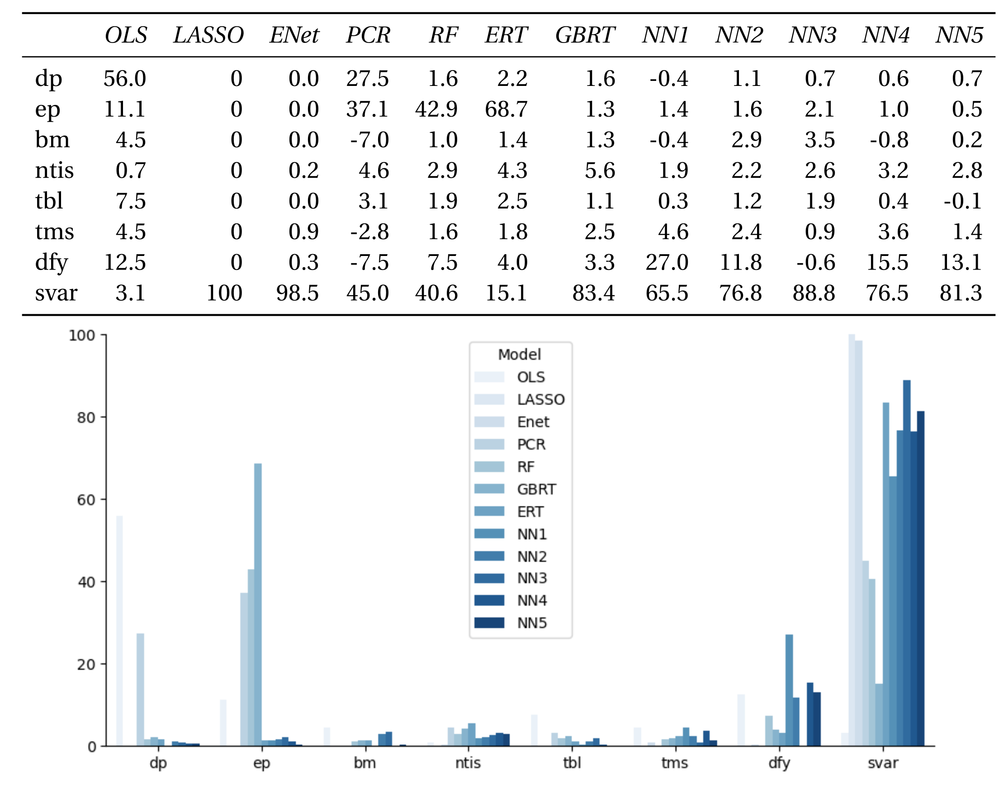 </div>
## Reduced predictor sets<span class='subtitle'><br></span> <div class='figure'> 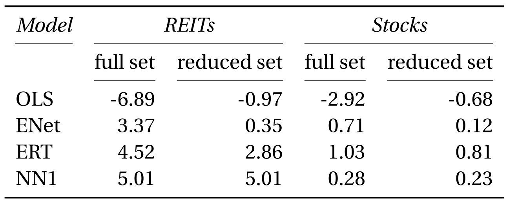 </div>
## Missing data (side track)<span class='subtitle'><br>Missing values impair predictions. Sparsity aware algorithms preserve data.</span> <div class='figure'> 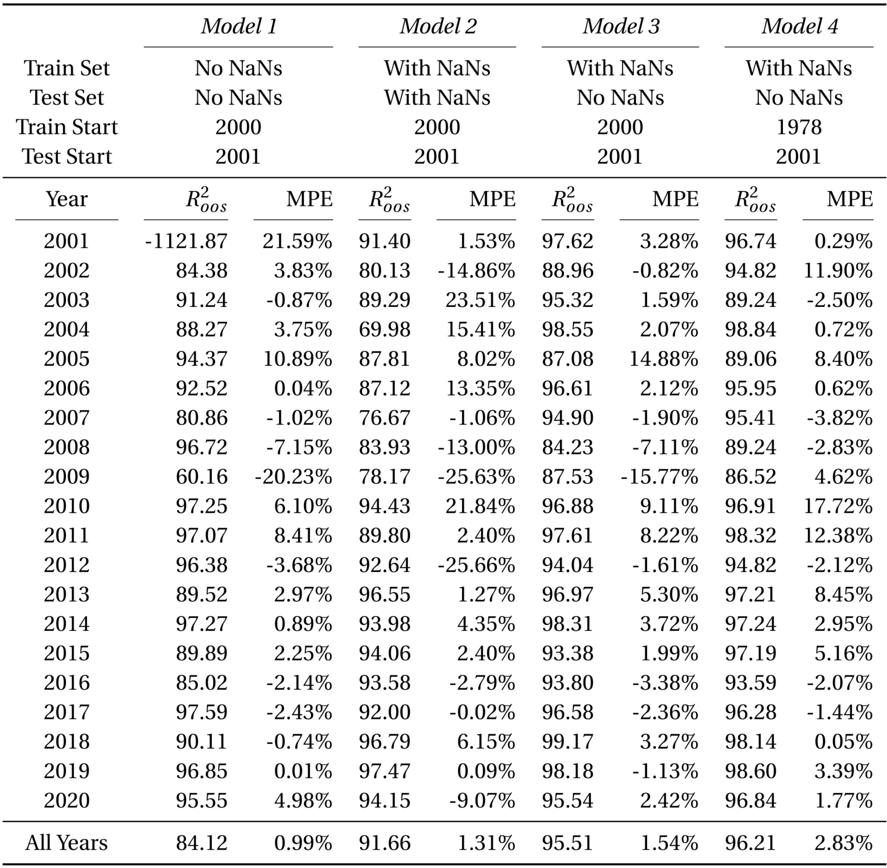 </div>
## <span class='subtitle'><br></span> <div class='figure'> </div>